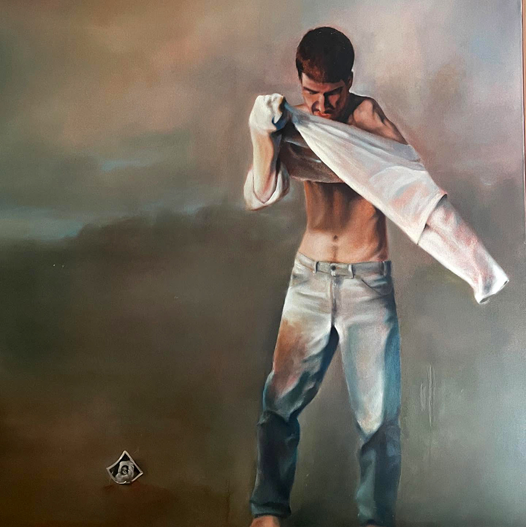
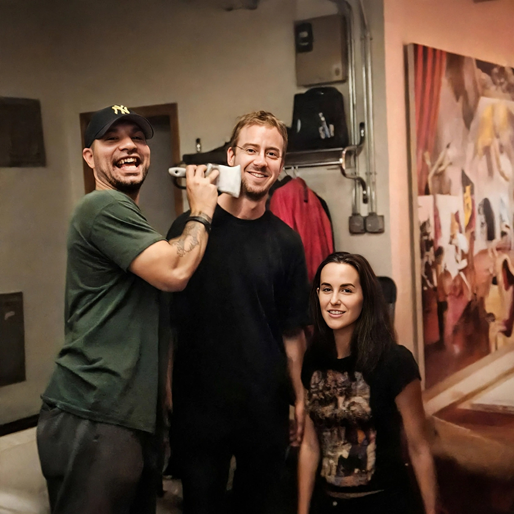
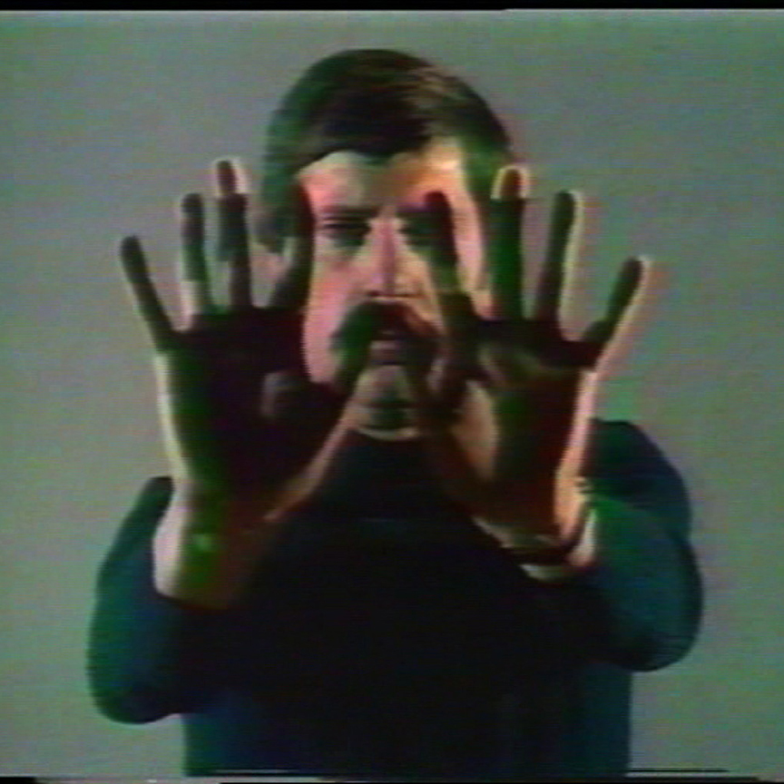
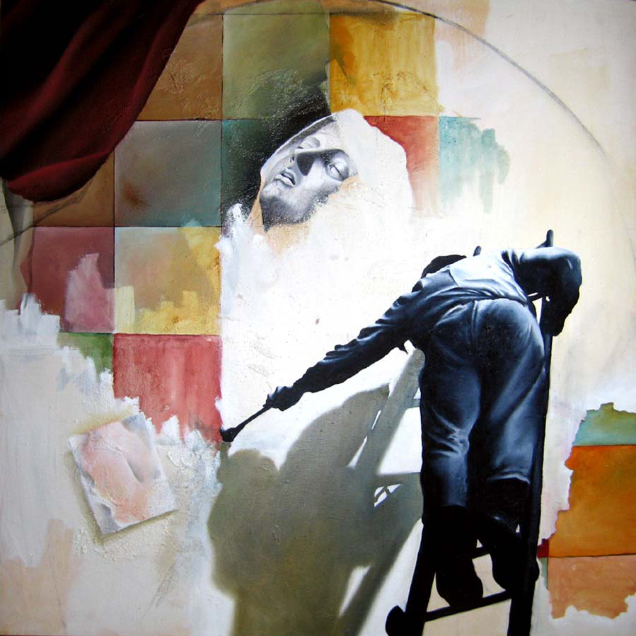
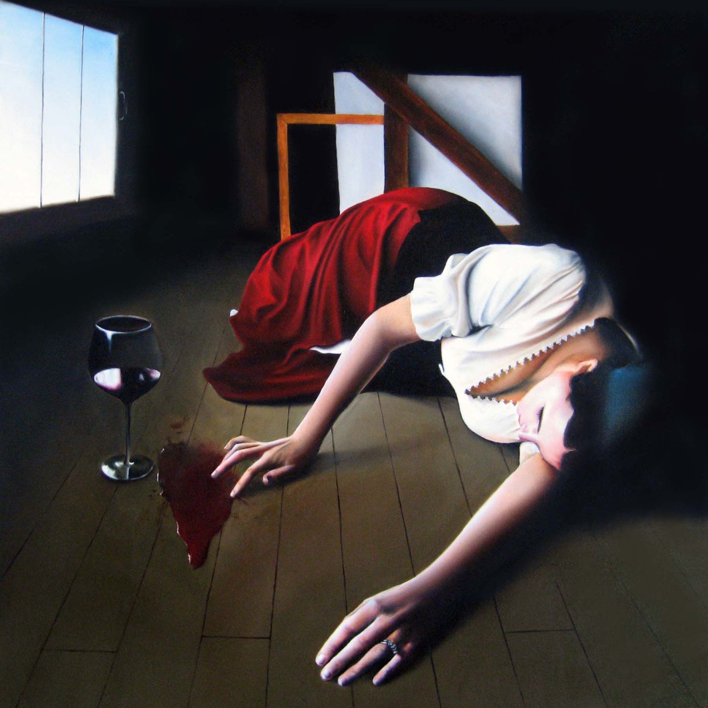
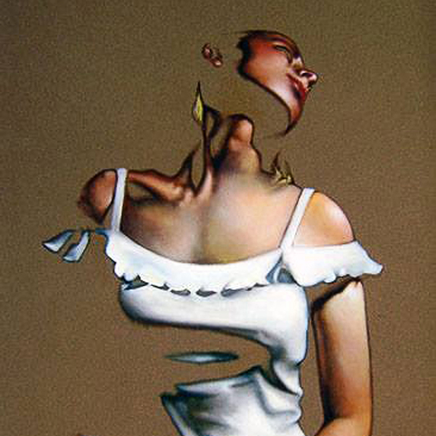
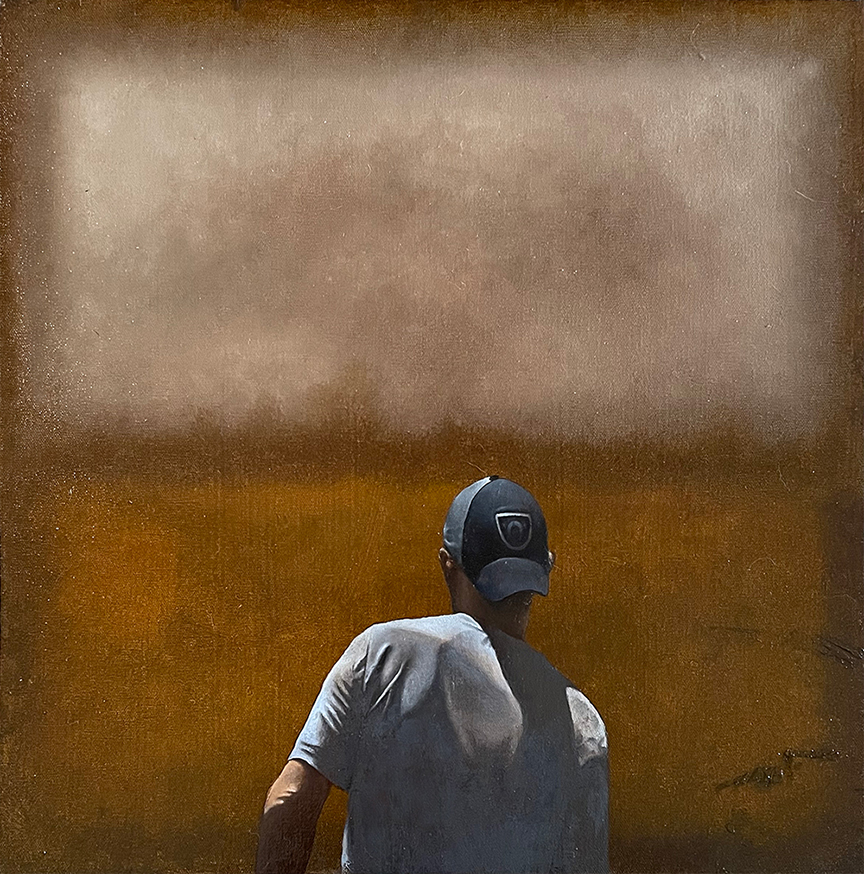

Journey
Dates are approximate — the series overlapped at times, and there were pauses for work and for Covid.

1997–1999
SUNY New Paltz
Studied painting at SUNY New Paltz.

1999–2001
Kostabi World
Painter for Mark Kostabi in New York.

c. 1999–2000
Douglas Davis
Studio assistant to Douglas Davis in New York.

c. 2001–2005
The Tile Series
Surreal, juxtaposed imagery over tile like backgrounds.

c. 2006–2012
The Attic Series
Dark interiors and figures in attic-like spaces — the early version of the dark-room work. [DRAFT GUESS — confirm or rewrite]

c. 2012–2022
Sandpaper Series
Figures painted on raw sandpaper, dissolving into the gritty ground.

2023–present
Figurative / Spiritual Work
Figures in solitude contemplaiting their inner self